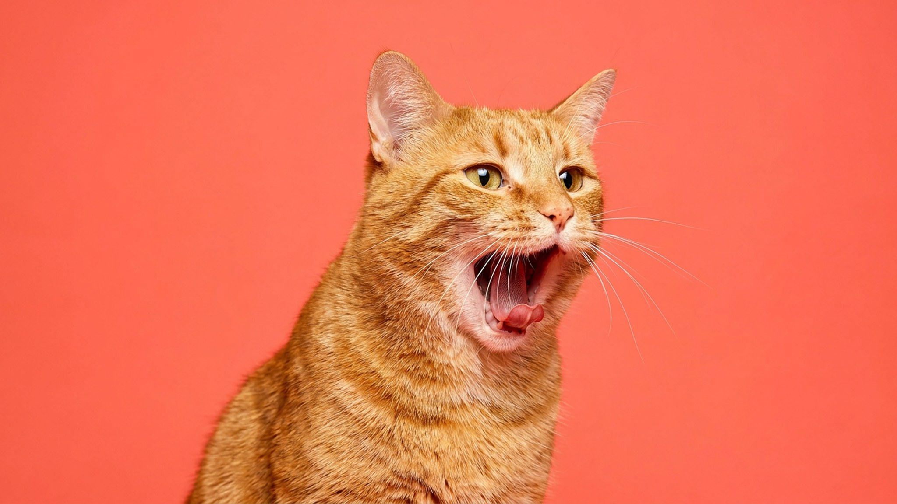

Вы зеваете — и через секунду зевает собака или кошка рядом. Кажется, совпадение. На деле это один из самых изученных поведенческих феноменов: у собак «заразная» зевота с хозяином связана с уровнем привязанности. Ниже — что на самом деле означает зевок питомца и в каких случаях стоит понаблюдать внимательнее.
🐾 Спросите AI-ветеринара прямо сейчас
AnimaLife — приложение, где AI-ветеринар отвечает на вопросы о кошке или собаке 24/7. Бесплатно, без записи и очередей.
Исследователь поведения собак Тюрид Ругос описала зевок как один из «сигналов успокоения» — жестов, которыми собаки снижают напряжение: своё и чужое. Собака может зевнуть, когда:
Исследования показывают: собаки зевают «вслед» хозяину чаще, чем в ответ на зевоту незнакомца. Чем сильнее привязанность — тем выше вероятность «заражения». Это не магия: учёные связывают феномен с эмпатической чувствительностью собак к людям, с которыми они живут.
У кошек механика немного другая. Зевок чаще всего означает переход между состояниями: из сна — в бодрствование, из напряжения — в расслабление. Кошка, которую только что гладили «не так», может выйти из контакта, потянуться и зевнуть — это способ сбросить накопившееся напряжение и переключиться.
«Заразная» зевота у кошек тоже встречается, хотя изучена меньше. Если кошка зевает рядом с вами в спокойной обстановке — скорее всего, ей хорошо и безопасно. Это один из маркеров того, что кошка чувствует себя в своей территории комфортно.
Большинство зевков — норма. Но есть контексты, в которых частая или необычная зевота заслуживает внимания:
Если вы замечаете такое — понаблюдайте несколько дней и запишите, когда именно это происходит. При сомнениях покажите питомца ветеринару: описание конкретных ситуаций поможет врачу быстрее разобраться.
Чаще всего — просто знать. Зевок собаки во время шумного застолья — не каприз, а просьба о паузе. Зевок кошки после активных объятий — сигнал «хватит». Питомцы постоянно комментируют своё состояние языком тела, и зевота — часть этого словаря.
Реагировать просто: дайте питомцу пространство, снизьте интенсивность контакта, убедитесь, что обстановка спокойная. Если зевок — в ответ на ваш, можно считать это комплиментом.
🐾 Дневник здоровья питомца — в кармане
Вес, прививки, симптомы и напоминания в одном приложении. AnimaLife следит за здоровьем питомца вместо вас.
🐾 Понравился разбор?
Подпишитесь на канал — каждый день разбираем по одному тревожному симптому у кошек и собак: что в пределах нормы, а когда пора к врачу. Подпишитесь, чтобы не пропустить разбор, который может спасти здоровье вашего питомца.
Материал носит информационный характер и не заменяет очную консультацию ветеринара.